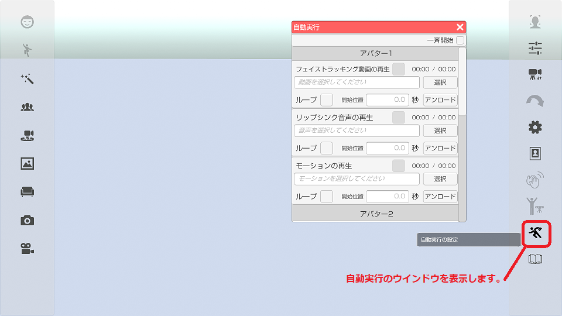
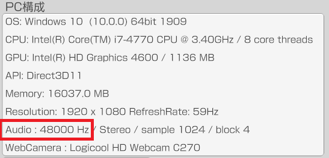

下記の３種類に対応しています。
MP4ファイルでフェイストラッキングを行う。
Wavファイルでリップシンクを行う。
BVHファイルでモーションを実行する。

- 3teneSTUDIO を起動してアバターを読み込む。
- アバターの調整 → 「設定」タブ → フェイストラッキングの種類を「動画ファイル」に変更。
- フェイストラッキングのプレビューウインドウを開いておく。（見ないなら不要）
- トラッキングウインドウを開いてファイストラッキングの「開始」を実行する。
- 右側メニューの下側にある自動実行アイコンでウインドウを開く。
- 選択ボタンで動画ファイルを選択する。
- フェイストラッキング動画の再生にチェックを付ける。（動画再生が開始されアバターが動きます。）
※1 動画ファイルは MP4 (H.264) に対応しています。(AVI には対応していません。)
※2 動画ファイルは「顔」が中心で顔がなるべく大きく映っている必要があります。
顔の表示部分が小さいと目の開きの精度が落ち、まばたきが多くなります。
※3 動画ファイルに含まれる音声は無視されます。
- 3teneSTUDIO を起動してアバターを読み込む。
- アバターの調整 → 「設定」タブ → リップシンク種類を「音声(ファイル)」に変更。
- トラッキングウインドウを開いてリップシンクの「開始」を実行する。
- 右側メニューの下側にある自動実行アイコンでウインドウを開く。
- 選択ボタンでWaveファイルを選択する。
- リップシンク音声の再生にチェックを付ける。（音声再生が開始されアバターが動きます。）
対応しているWaveファイルの仕様は下記になります。
圧縮：無圧縮のリニアPCMのみ。
サンプリング周波数： 22050 Hz 以上 ※
量子化ビット数： 16 bit のみ。
チャンネル数： モノラル(1ch)、ステレオ(2ch)
※ 音声データのサンプリングレートは設定「情報」タブのPC構成で表示される
Audio のサンプリングレートと同じ値が推奨となります。
(最近のシステムではほぼ 48000 Hz になります。)
Audio で表示されるサンプリングレート以外にも対応していますが
音質劣化や時間軸ズレの原因となります。

選択した音声の再生音をスピーカー等に出力する
下記の操作で再生音を出力する事が可能です。
設定 → 「システム」タブ → 「マイク入力を再生する」にチェックをつける。
また、アバターの調整 → 「顔」タブ → 入力ゲイン(音声) を
変更する事で音量を調整する事が可能です。
- 3teneSTUDIO を起動してアバターを読み込む。
- 右側メニューの下側にある自動実行アイコンでウインドウを開く。
- 選択ボタンで BVH ファイルを選択する。
- モーションの再生にチェックを付ける。（アバターが動きます。）
※ファイル選択後にアバターの調整で位置を変更した場合は
モーションのアンロードを行い、再度ファイル選択してください。